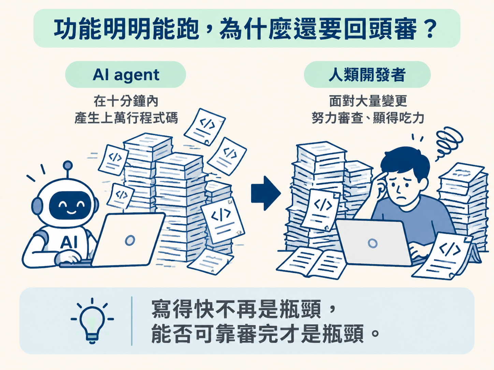
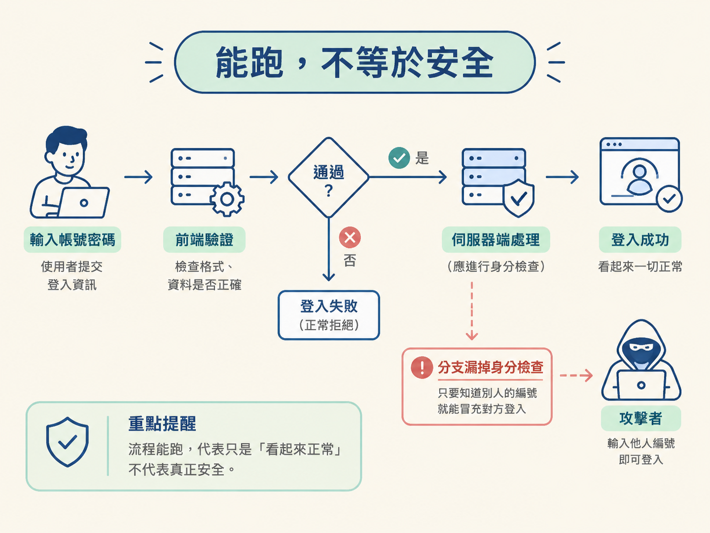
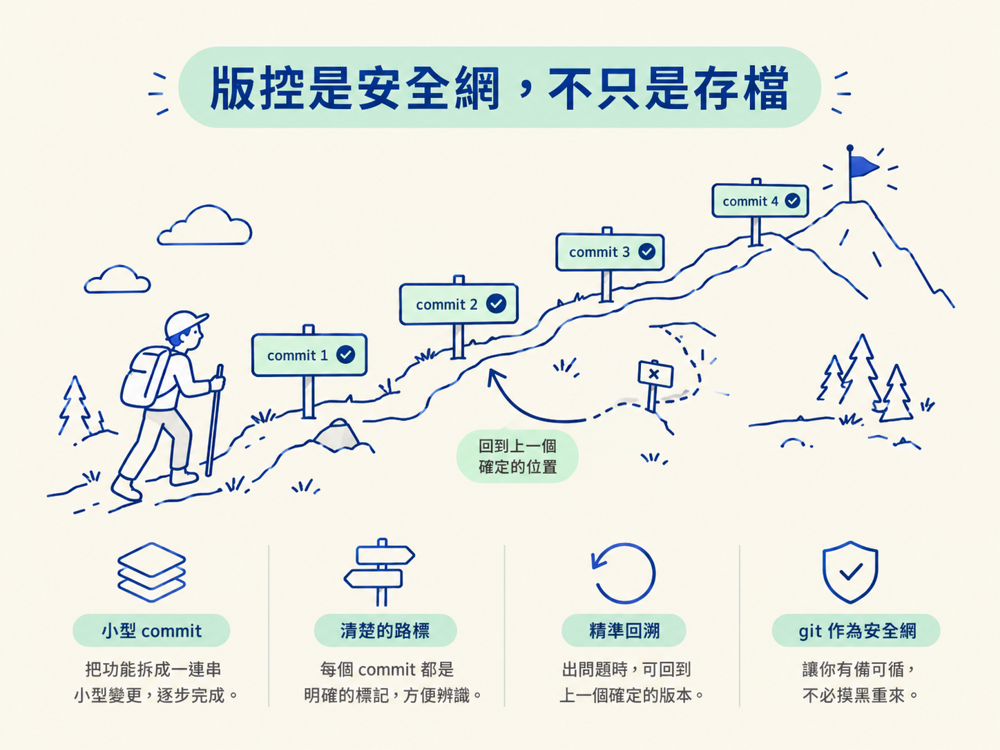

理解為什麼 AI agent 大量生成程式碼之後，版控與 code review 會變成工作流的核心，而不是等功能做完才順手補上的收尾。
你跟著前面的建造迴圈走了一輪：請 agent 做出畫面，在模擬器裡點過一遍，結果看起來正常，也準備繼續開發下一個功能。可是迴圈清單上還有兩格：review 和 commit。
如果程式已經能跑，這兩格到底在忙什麼？直接往下做不是更快嗎？
在過去，這個直覺有時候確實成立。那時候主要由人手寫程式，產出的速度比較慢，開發者通常知道每一段程式是誰寫的，也大致知道它為什麼存在。
但現在，agent 可能在十分鐘內產生上萬行程式碼。這時候「寫得快不快」已經不是主要瓶頸，真正的問題變成：你是否願意，也是否有能力，把這些程式可靠地看過一遍。

如果沒有先建立這個觀念，後面的 branch、PR 和 CodeRabbit 看起來就只會像一連串形式上的儀式。這一節先把兩件事說清楚：為什麼需要審查，以及為什麼需要版控。
過去的開發瓶頸在「寫」。一個人一個下午能完成的程式有限，因此流程大多在想辦法讓寫程式的人更順、更快。
現在 agent 把「寫」的成本壓得很低，新的問題就出現了：程式碼堆積的速度，開始超過人類肉眼能可靠審查的速度。
所以現在的重點，已經不只是誰能寫程式，還要看誰能把大量生成的程式碼檢查清楚。能把風險找出來、把問題修掉，才有辦法安心往前走。
所以「手動把所有內容逐行看完」行不通。假設一次 PR 有一萬三千行變更，還分散在一百多個檔案裡，你很難逐行讀完，還能一直維持同樣的專注力。
比較可靠的做法，是建立有結構的審查方式：先用工具掃出高風險區域，再把注意力集中在那些地方。後面的幾節會繼續說明這套方法。
另一個需要拆掉的誤解是：「測試過了，就代表沒問題。」
測試能證明某條路徑在當下的情境中走得通，但它不保證程式遇到其他輸入或情境時仍然安全。
例如，一段看起來正常的登入流程，可能在某個分支漏掉伺服器端的身分檢查，只要知道另一個人的編號，就可能冒充對方。又或者，一個正常運作的 API 呼叫，可能在傳送資料時，把不該外流的金鑰或個人資料一起送出去。

這些問題通常不會讓畫面立刻壞掉。它們可能要等到有人刻意利用，才會真正爆開。
還有一類問題和安全無關，卻同樣很難只靠肉眼抓出來，那就是團隊慣例的不一致。同一個 repo 裡，有些地方採用一套寫法，另一些地方採用另一套寫法，短期內也許不影響執行；但時間一久，每次修改都會變得更慢。
agent 每次生成程式碼時，也不一定記得上一輪的所有約定。不一致的寫法就像房間角落慢慢堆起來的雜物，單次看起來沒什麼，累積之後卻會讓整個 repo 越來越難維護。
因此，自我檢查很重要，但仍然不夠。讓 agent 審查自己的作品，就像讓考生自己批改考卷：不是完全沒有幫助，只是很容易漏掉自己習慣忽略的地方。你還需要一個獨立的角度，再把程式掃過一次。
最後要重新理解 git 的角色。很多人把 commit 當成存檔，彷彿只是怕自己忘記，所以順手記錄一下。
但在 agent 工作流裡，git 更像是一張安全網。當你在隔離的分支上工作時，即使 agent 把某個地方改壞，main 上目前可用的版本也不會受到影響。
如果一項功能被拆成一連串小型 commit，出了問題時，你也能精準回到錯誤發生之前，而不必把整包工作全部重做。這就像在登山路上留下清楚的路標：走錯時，可以回到上一個確定安全的位置，而不是摸黑找回起點。

把版控和審查放在一起看，三條課程路線最後會收斂到同一套工作方式：每完成一個功能，就在自己的分支上工作，建立一個可回溯的 commit，開一個 PR，讓 AI 審查工具檢查變更，修正意見後，再合併回 main。
有了這些做法，「用 agent 高速產出」才變得可以信任。這些不是額外加上去的規矩。
agent 把寫程式的成本壓低之後，瓶頸就從「寫」換到了「審」。能跑不代表安全，也不代表符合團隊慣例，因此除了自我檢查，還需要一個獨立的角度。版控不只是存檔，它是一張安全網：分支用來隔離風險，commit 讓你能精準回溯。分支、commit、PR、AI 審查與合併，其實是同一套做法，讓高速產出變得可以信任。
現在你知道為什麼需要審查，也知道為什麼需要版控。下一個問題就是：「具體要怎麼審？」這套流程的骨架，其實是一條 git 的時間線。下一節會沿著這條時間線，把 branch、commit、PR 和 merge 四個動作一次說清楚。